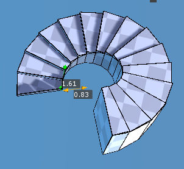
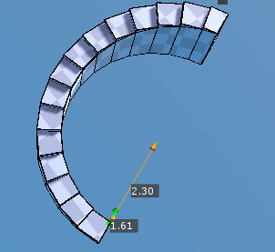

Spiral Stair Tool¶
{kind=link}
Creates a Spiral Stair.
Steps¶
- Select
Spiral Stair Tool - Drag the mouse on a floor or an another polygon as if you make a cylinder.
- Release
LMBand move the mouse cursor in a normal direction to raise the height. You can change the direction of the stair by pressingSPACE. - Click
LMBto stop raising. - Type the properties in inepector to adjust the shape of the stair.
- Press
SPACEto complete or PressESCto cancel.
Interface¶
LMB Drag- Starts to create a spiral stair.
SPACE- Change the direction of the stair or Completes creating a spiral stair
ESC- Cancels creating a spiral stair.
Properties¶
- Width
- The step width.
- Height
- The height of the stair
- Radius
- The inner radius of the stair. The whole radius of the stair from the center will be
Radius+Width. - Curvature
- How curved the stair is.
- Mirror
- Reflects the stair.
- Glue
- The spiral stair with this property enabled will be glued to the polygon where it started to be created. It means that the hidden part of the floor polygon by the created stair is removed.
- Angle Snap
- When you drag the mouse with this property on, the direction of the spiral stair will snap to every 90 degree.

{kind=link}
Spiral Stair created on the floor. Its curvature is 270 degrees.

{kind=link}
Reduces Width property and Increases Radius. Its curvature is 180 degrees.